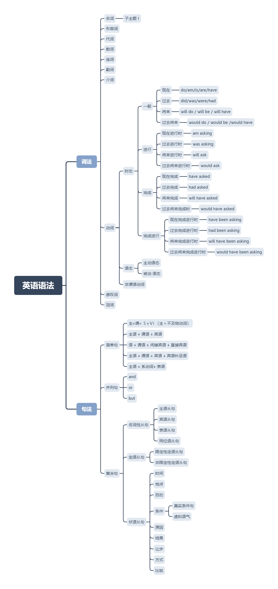

Lott's Yuer Blog
首页
第一章 育儿经验
第一篇 育儿小结
第二篇 学校历史数据
第三篇 好单位梳理
第四篇 每日任务记录
第五篇 英语探索
一 语法
英语练习
参考
第二章 人生
第一篇 历史事件
第二篇 人生最佳实践
第三篇 强身健体
Lott's Yuer Blog
»
第一章 育儿经验 »
第五篇 英语探索
概述
本篇总结英语相关知识
一 语法
思维导图

English_Grammar_for_College_Students.pdf
Collins Cobuild 英语语法大全〈简体〉.pdf
英语练习
听、说、读、写
参考
秒懂英语语法！一目了然
整个英语语法体系
一篇吃透整个英语语法体系！
小学英语单词
最实用的小学英语语法大全
小学英语单词分类大全
« Previous
Next »